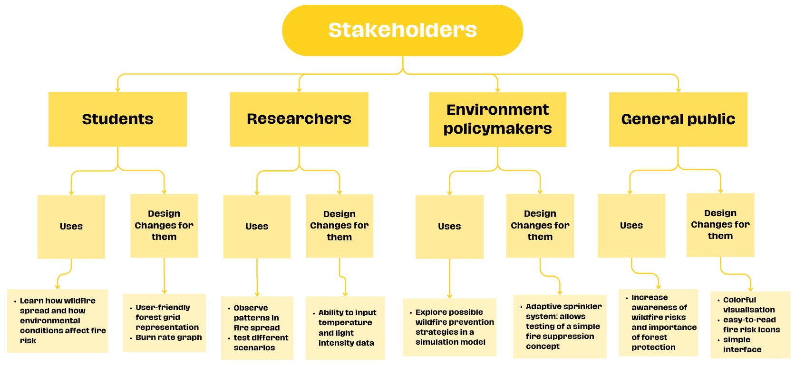
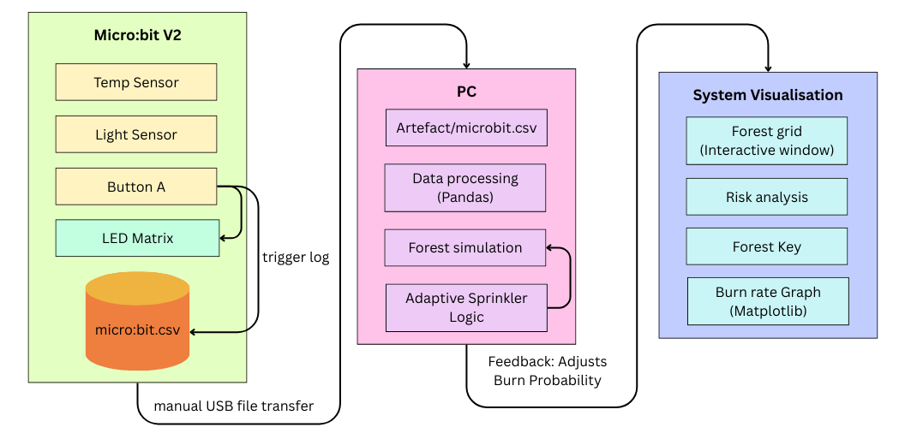
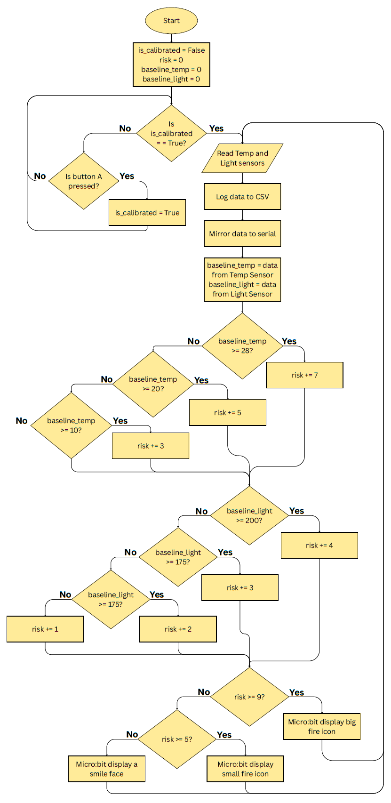

3. Plan and Design
3.1 Design Objectives
My project is a wildfire risk and spread simulation system:
- Micro:bit collects temperature and light intensity readings using its internal sensors.
- Pressing button A records the readings and saves them automatically to a CSV file using the datalogger extension.
- The micro:bit displays a fire risk icon on its screen based on the temperature and light intensity values.
- The simulation model in python reads the CSV data, applies a fire probability algorithm, and updates a grid-based forest with fire spreading from tree to tree.
- The model shows an adaptive sprinkler system that activates when fire is high, reduces fire spread probability algorithm and produces a burn rate graph to visualise the number of trees burned over time.
3.2 Design Options & Justification
I listed out my design choices and why I chose it.
| Embedded System Options | Reason | |
|---|---|---|
| Micro:bit V2 | ✅ | accessible, has built-in sensors, datalogger extension, easier to program and require less complex hardware setup |
| Arduino, Raspberry Pi | ❌ | Arduino system requires additional wiring and external components. Raspberry Pi is more suitable for advance computing tasks |
| Input sensors choices | Reason | |
| Internal Temperature & Light Intensity Sensor | ✅ | makes the system simpler to set up without external wiring |
| External Temperature & Light Intensity Sensor | ❌ | need external wiring |
| Input Options | Reason | |
| Analogue: Temperature, Light intensity | ✅ | important factors that influence fire risk and spread behavior |
| Digital: Button A | ✅ | used to trigger to record and store sensor data, make my system more user-friendly |
| Data collection method | Reason | |
| Datalogger extension in makecode | ✅ | automatically store readings in a csv file on the device |
| Serial | ❌ | data loss can happen if the timing between device and computer is not properly synchronised |
| Language | Reason | |
| Python | ✅ | has a lot of useful libraries such as pandas and matplotlib, making data processing and visualisation easier |
| Data analysis | Reason | |
| Pandas | ✅ | has built-in functions for reading, filtering and analysing data |
| CSV file storage | ✅ | easy to export from datalogger and can directly read by pandas |
| Numpy | ❌ | Pandas can handle CSV data easily and work with matplotlib |
| Modelling | Reason | |
| grid-based forest representation | ✅ | easier to visualise fire spread |
| Use average light and average temperature values | ✅ | so my model use real sensor data without complicating my project |
| Adaptive sprinkler system that slows down burn rate | ✅ | show how my system can respond to high fire risk by reducing burn rate during the simulation |
| Burn rate graph | ✅ | visualise how quickly trees are burning during the simulation |
3.3 Stakeholders and their needs
I made a mindmap to break down all stakeholders, what I should do regarding to their needs.

3.4 Technologies that I am using
| Hardware | Role |
|---|---|
| BBC Micro:bit V2 | Collects temperature and light readings, display fire risk icons |
| USB cable | Connects Micro:bit to computer for programming and data transfer |
| Computer | Runs python simulation, read CSV files, visualises forest grid and burn rate graph |
| Lamp, Radiator | Allows variable temperature and light for testing |
| Software | Role |
|---|---|
| Visual Studio Code | Programming environment for writing and running Python simulation code |
| Python 3 | Main programming language used to build the wildfire simulation model |
| MakeCode | Programs the micro:bit to collect temperature and light data, store it in csv using the datalogger, and display fire risk icons |
| Pandas Library | Used to read csv data collected from the micro:bit |
| Matplotlib Library | Visualise simulation results (the burn rate graph) |
| IPython/IPython.display | Display simulation outputs and update the forest grid visualisation |
| ipykernel | Enable jupyter kernel execution in VS Code for running simulation code |
| ANSI Escape codes | Add colour formatting to the forest simulation display |
| random module | Introduce probabilistic fire behaviour in the model |
| time module | Control simulation speed |
3.5 System Architecture

3.6 Embedded System Logic
